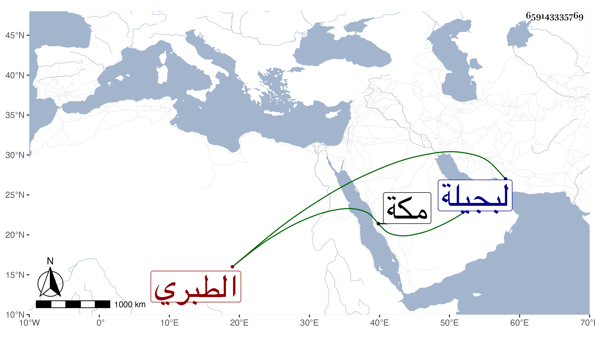

0902Sakhawi.DawLamic.ITO20230111-ara1.EIS1600.659143335769
Biography ID: 659143335769
699
محمد الزين أبو البركات الطبري شقيق الذي قبله . ولد في الثلث الأخير من ليلة الجمعة رابع عشرى صفر سنة خمس وأربعين وثمانمائة بمكة وسمع بها من أبيه وأبي الفتح المراغي ، وأجاز له الزين بن عياش والزين الأميوطي والمحب المصري وأبو جعفر بن العجمي وغيرهم وشارك والده وإخوته في إمامة المقام نوبا بينهما وربما توجه لبجيلة وغيرها بل أكثر أوقاته في الغيبة وقد صليت خلفه وليس بمحمود السيرة مع أنه أشبه من أخويه قراءة .
